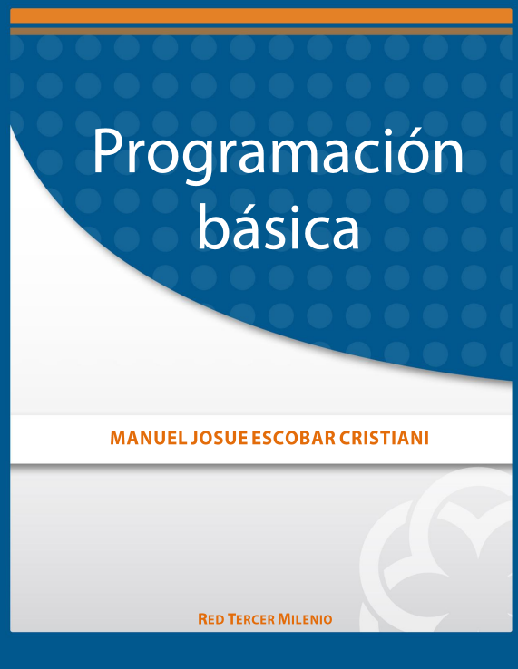

Fundamentos de Programación con el Lenguaje de Programación C++
Autor: Vicente Benjumea y Manuel Roldán
 Descripción:
Descripción:
En este manual se describen las características básicas del lenguaje C++. Está concebido desde el punto de vista docente, por lo que nuestra intención no es hacer una descripción completa del lenguaje, sino únicamente de aquellas características adecuadas como base para facilitar el aprendizaje en un primer curso de programación. Se supone que el alumno compatibilizará el uso de este manual con las explicaciones del profesor, impartidas en el aula. El lenguaje de programación C++ es un lenguaje muy flexible y versátil. Debido a ello, si se utiliza sin rigor puede dar lugar a construcciones y estructuras de programación complejas, difíciles de comprender y propensas a errores. Por este motivo, restringiremos tanto las estructuras a utilizar como la forma de utilizarlas.
Manual sobre redes basadas en el Protocolo Internet (IP) y asuntos conexos
Autor: Hamadoun I.Touré
Descripción:
La utilización de las tecnologías basadas en el protocolo Internet (IP) se ha convertido en un elemento estratégico del diseño, realización y utilización de las redes de telecomunicaciones. Es por ello que los miembros de la UIT muestran un interés cada vez mayor en los asuntos en materia de política y reglamentación relacionados con el crecimiento de redes IP, tales como Internet, y su convergencia con otras redes. Como ejemplo puede citarse la rápida acogida que está teniendo la voz por IP (VoIP), que ha dado lugar recientemente a la adopción de diversas medidas y decisiones de reglamentación nacional.
Proyectos de desarrollo de software
Autor: Dr. Marco Villalobos Abarca
Descripción:
Textos y libros de Ingeniería de Software se encuentran en grandes cantidades en bibliotecas o la web y muchos de ellos en varias ediciones. Entonces, ¿por qué escribir uno más? Simplemente porque no existe uno con orientación hacia proyectos y el contexto empresarial que le da sentido a la Ingeniería de Software. Existe una brecha marcada entre lo que se enseña en el aula de clase y la realidad del desarrollo de software en las organizaciones. Esta situación ha motivado una reflexión en el mundo académico acerca de las competencias y habilidades que deben ser desplegadas por los futuros desarrolladores de software y las estrategias pedagógicas que pueden ser utilizadas de manera que sus experiencias de aprendizaje estén altamente influenciadas.
Programación de Web Dinámico
Autor: Carlos Roberto Jaimez González
Descripción:
El presente material didáctico tiene como objetivo apoyar la enseñanza de la UEA Programación de Web Dinámico de la Licenciatura en Tecnologías y Sistemas de Información de la Universidad Autónoma Metropolitana Unidad Cuajimalpa. El contenido de este trabajo es útil no solo para estudiantes de dicha UEA, sino también para personas con conocimientos sobre creación de páginas web estáticas que utilicen el lenguaje de marcado de hipertexto (HTML) y las hojas de estilo en cascada (CSS), quienes estén interesadas en un curso introductorio acerca del desarrollo de páginas web dinámicas e interactivas utilizando el lenguaje de programación JavaScript y el modelo de objetos de documento (DOM).
Fundamentos de bases de datos
Autor: Abraham Silberschatz
Descripción:
La gestión de bases de datos ha evolucionado desde una aplicación informática especializada hasta una parte esencial de un entorno informático moderno y, como resultado, el conocimiento acerca de los sistemas de bases de datos se ha convertido en una parte esencial en la enseñanza de la informática. En este libro se presentan los conceptos fundamentales de la administración de bases de datos. Estos conceptos incluyen aspectos de diseño de bases de datos, lenguajes de bases de datos e implementación de sistemas de bases de datos.

Programación Básica
Autor: Manuel Josue Escobar Cristiani
Descripción:
Que el estudiante aprenda cómo nació el lenguaje de programación “C” y su importancia en el desarrollo de los sistemas de cómputo, así como algunos conceptos básicos, pero en extremo importantes, utilizados en la programación de sistemas. El objetivo principal de este libro es enseñarle al alumno el lenguaje de programación “C”; para lograr este objetivo es muy importante, que durante el curso, el alumno tenga acceso a un equipo con el compilador “C” y así aprender mediante la programación constante de ejemplos y proyectos.
Ingeniería De Sistemas
Autor: Benjamin S. Blanchard
Descripción:
Un sistema puede variar por su forma, adecuación, y/o función. Se puede tratar con un grupo de aviones desarrollando una misión en una situación geográfica concreta, un barco o una capacidad de dirigir el combate, una red de comunicaciones capaz de distribuir información a nivel mundial, un sistema de distribución de energía que abarque canales y plantas generadoras de energía, una planta de fabricación capaz de producir «x» productos en un tiempo determinado, o un pequeño vehículo terrestre que realice el transporte de cierto tipo de carga de un lugar a otro. Cada sistema está formado por componentes, y éstos a su vez pueden descomponerse en otros más pequeños. Si en un sistema determinado se establecen dos niveles jerárquicos, al inferior se le suele denominar «subsistema».